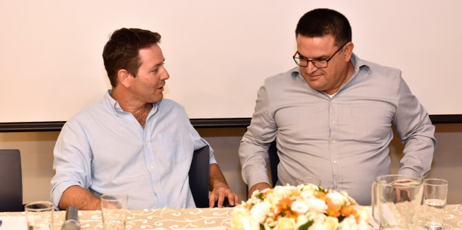

On May 15, 2018, fellows of the Mandel Program for Local Leadership in Yeruham and Ramat Hanegev led a Mandel Negev Platform Event titled "Together and Apart," which explored issues of cooperation in regional development. Cooperation is a key topic in the Yeruham and Ramat Hanegev training program, which is directed by Dr. Itzhak (Kiki) Aharonovich and Dr. Noa Milman.
The event was opened by Dr. Adi Nir-Sagi, director of the Mandel Center for Leadership in the Negev, who spoke about the importance of partnership in leading change, and about the ability of leaders to change themselves and to affect the world around them. Next, Ehud Adany, one of the program's fellows, presented a central theme of the course of study: How can the ties between members of the Mandel community in the Negev be leveraged to develop the Yeruham-Ramat Hanegev region?
Prof. Eran Razin, the Leon Safdie Chair in Urban Studies and director of the Institute of Urban and Regional Studies at the Hebrew University of Jerusalem, delivered a lecture on cooperation among local authorities in the periphery. He emphasized the need to maintain a balance between the local interests of each authority and the need for efficiency that is required by the central government.

Following the lecture, program fellow Noga Yogev moderated a panel discussion on local cooperation. As part of the panel, Sigal Moran, head of the Bnei Shimon regional council, spoke about collaborative ventures as a complex challenge with great potential to strengthen the region. David Mingelgreen, deputy CEO of the Israel Government Tourist Corporation, described the importance of providing a diverse range of tourism opportunities in the region in order to develop, promote, and improve tourism initiatives. Yoav Dunitz, former head of the Mitzpe Ramon education department, spoke about the challenges of regional partnerships in education, and the complexity of preserving community identity.

This Mandel Negev Platform event, which was moderated by program fellow Zehavit Yakoov, ended with a conversation between Michael Biton, head of the Yeruham local council, and Eran Doron, head of the Ramat Hanegev regional council, who presented some of the initiatives they conduct on behalf of the region’s residents, both together and separately. They emphasized the importance of developing grassroots regional leaders who are committed to advancing the area, as well as the need for determined leaders who understand the importance of maintaining a cooperative approach.

{kind=link}